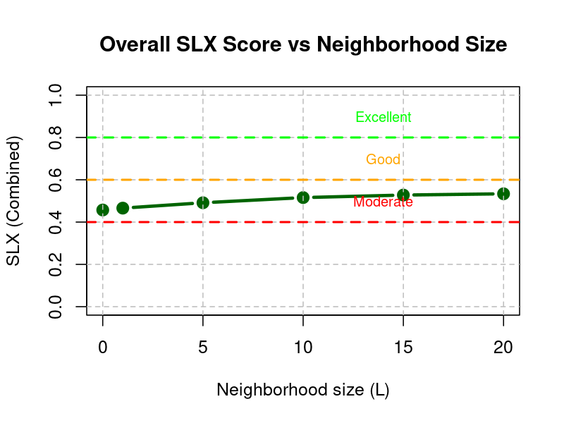

Report on ACCORD VS at GeoSphere
Implementation and Validation of Spatial Verification Methods for Extreme Events
Introduction
During a three-week scientific visit at GeoSphere, the main focus was the implementation and validation of spatial verification methods for high-impact meteorological forecast assessment, particularly for extreme weather events. This work contributed to the ACCORD MQA initiative, targeting operational model evaluation and development using the harp package.
General Review of Verification Methods
A comprehensive review of advanced spatial verification techniques set the context for evaluating high-resolution weather forecasts, especially regarding the challenge of location-dependent forecast errors and the “double penalty” effect (Sass 2021).
SLX Score
Method Summary
The SLX score was implemented to quantify the similarity between forecast and observed fields, systematically reducing penalties for small spatial displacement errors (Peralta 2025b).
- Key properties:
- Focuses on matching patterns and features within spatial neighborhoods.
- Sensitive to both the location and the structure of extreme events.
- Effective for high-resolution forecasts where traditional point-by-point metrics fail.
Agreement Scales Score (Dey Method)
Method Summary
The Agreement Scales Score identifies the smallest neighborhood size at which forecast and observation fields “agree”, mapping scale-dependent skill and uncertainty [Dey (2016)](Peralta 2025a).
- Key properties:
- Produces spatial maps of agreement scale.
- Reveals local skill variations and ensemble spread.
- Enables targeted verification of prediction uncertainty for extremes.
Case studies
Case 1: Convection driven event on July 28 2025 (Austria domain)




Case 2: Orographically driven precipitation event on July 8 2025 (Austria domain)


Summary of results
The two case studies illustrate the added value of the spatial verification methods implemented here.
Summary of SLX scores for the convection-driven case
The combined SLX score starts around 0.45 at the grid scale (L=0). With increasing neighborhood size (L=5–20), the score climbs gently, reaching ~0.52.
The forecasts remain in the moderate range throughout, but trending upward with smoothing. This means that, even at grid scale, the forecast has non‑zero pattern similarity, but it is clearly penalized for displacement errors. As neighborhoods grow, SLX improves slightly, showing that the model has correct structures but shifted. However, the fact that it does not enter the “Good” category suggests location errors are widespread enough to limit skill beyond moderate quality.
Looking at the individual components of SLX, the obs minima are very high (0.8–0.85), stable across scales. This means observed rainfall minima (dry areas) are consistently well represented in the forecast (little “false rain”).
Observation Maxima are in the mid‑range (0.38–0.42 initially, decreasing slightly with scale). Observed maxima are only partly captured, and location/intensity mismatches with forecast hamper this component.
Forecast minina starts lower (~0.3) but rises steadily with scale, reaching ~0.8. This shows that forecasted minima gradually find correspondence in observations once neighborhoods are widened.
Forecast maxima show very poor agreement (<0.35 at L=0, dropping quickly towards ~0 by L=20). This indicates that forecast precipitation maxima do not collocate with observed maxima, even when neighborhoods are allowed. The model placed rain maxima, but not where reality did.
Summary of agrement scales for the convection-driven case
The field plots show that the forecast captures that a precipitation event occurred with similar spatial organization, but the location is shifted and fine-scale spatial detail is poorly aligned.
The agreement scales map shows the spatial field of the minimum neighborhood size (in grid points) needed for observations and forecast to “agree”. Darker reds (low values) are scarce — meaning only a few patches show agreement at very fine scales. Yellows/whites (large scales) dominate in central and southern parts of the domain, implying that only when the comparison window is broadened substantially (40–60+ grid points) do forecast and observed fields match.
The histogram shows a strong spike near zero indicates a subset of grid points with nearly perfect local agreement. That likely corresponds to regions with weak/no precipitation in both forecast and observation. There is a deep between ~5–20 grid points,indicating fewer areas of small-scale agreement. A secondary hump at ~60–70 grid points shows a significant fraction of the domain requires very broad neighborhoods before forecast and observed align — consistent with displaced but pattern‑similar rainfall. Mean agreement scale (red dashed line): Around ~38 grid points. This is very large, implying that over much of the domain, useful forecast skill only appears when smoothed to a mesoscale scale.
Summary: This analysis shows that while the event was well captured in a mesoscale sense, the model struggled with fine-scale localization — agreement only emerges at large neighborhood scales, consistent with systematic displacement along terrain.
Summary of SLX scores for the orographically driven case
Overall the SLX skill is highest at the grid scale and degrades as L increases: about 0.65 at L=0 (just at/above the “Good” threshold), then ~0.62 (L=5), ~0.55 (L=10), ~0.50 (L=15), and ~0.45 (L=20), which falls into “Moderate.” This monotonic decrease means most of the useful similarity is at fine scales; once you average over wider neighborhoods, the score is diluted. That is exactly what we expect when precipitation placement is terrain-locked and well aligned locally: the more you smooth, the more you mix matched peaks with surrounding mismatches and background, lowering the score.
On the individual components side, both maxima components are relatively strong at small scales and only gently decline with L, while the minima components are weaker and degrade more.
Observation and forecast maxima start around 0.65–0.70 at L=0 and remain comparatively high, ending roughly 0.55–0.60 by L=20. This says the model and observations share the same locations of intense orographic rainfall cores; peaks in the forecast collocate with peaks in the observations and vice versa. In other words, the event’s maxima are captured well.
Observation minima declines markedly from about 0.55 at L=0 to ~0.25 by L=20. This asymmetry indicates that many observed dry areas are not dry in the forecast (false alarms/light-precip “fill-in”). It’s a signature of a wet bias or drizzle contamination in the forecast field, which becomes more apparent as neighborhoods grow.
Forecast minima is moderate and fairly stable (roughly 0.55 down to ~0.45). Forecast dry zones find reasonable counterparts in the observations, but not as strongly as the maxima do.
Summary of agrement scales for the orographically driven case
The field plots show that precipitation is localized, with one strong maximum in the northwest corner and some weaker cores elsewhere. The model produces precipitation in broadly similar regions but introduces additional maxima, especially in the southeast, which were not observed.
The agreeent scales map shows mostly brown/red shades (small scales: 0–5 grid points), indicating that agreement is reached at very fine neighborhood sizes across much of the domain. This implies that the forecast and observed precipitation structures align closely, and only minimal spatial tolerance is needed. The small patches of lighter colors (10–20+) indicate localized zones where misplacement or wrong maxima reduce skill, requiring broader neighborhoods.
The histogram has an extremely sharp spike at very small scales (0–3 grid points). Almost the entire distribution collapses there, with the mean (red dashed line) at a very low value (~2–3). The long tail toward larger scales is negligible compared to the dominance at fine scales.
Summary: The forecast does reproduce the existence of orographic rainfall features, but with notable misplacement and some spurious intensity peaks. This suggests that for this case, orographic forcing anchored precipitation so strongly to terrain features that the model reproduced it with high fidelity, unlike the convective case where displacement dominated.
Summary Table: Core Methods
| Method | Purpose | Key Benefit |
|---|---|---|
| SLX Score | Spatial field pattern matching | Less penalization for small shifts, robust for extremes |
| Agreement Scales Score | Scale-dependent skill mapping | Local skill, uncertainty, ensemble spread visualization |
Future work
Both SLX and the agreement scales between members and observations have been implemented as separate scores within the verify_spatial function in a dedicated branch of harpSpatial. The agreement scales between ensemble member pairs have been implemented outside of verify_spatial, though they still make use of the full harp functionality.
Further optimization is needed to improve computational efficiency. While the current implementation performs reasonably well in smaller model domains, such as the Austrian domain presented here, it becomes significantly slower in larger domains (e.g., the DINI domain used at DMI).